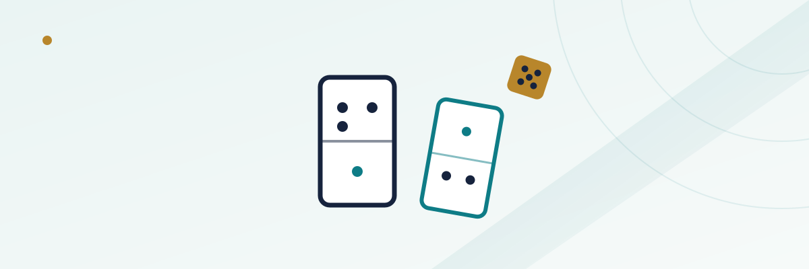

Pai Gow Tiles Explained: The Dice, the Banking Rotation, and the House Edge

Walk past the table games at a handful of US casinos — Hard Rock Atlantic City and several California card rooms are among the places that still spread it — and you might catch a slow, almost ceremonial game being dealt with small black dominoes instead of cards, dice rattling in a wooden box before anyone is dealt anything. That's Pai Gow Tiles, the original Chinese domino game that Pai Gow Poker was built to imitate with a standard card deck. The poker version got simplified for a Western audience; the tile version kept its full, slightly stranger rule set intact, and it rewards a little upfront explanation before you sit down.
In this guide
- The 32 tiles and how they're organized
- What the dice actually decide
- Splitting four tiles into two hands
- Scoring a hand: the baccarat-style point count
- Gee Joon: the wild pair at the top of the rankings
- Wongs, Gongs, and how ties actually resolve
- Taking the bank yourself
- How it compares to Pai Gow Poker
The 32 tiles and how they're organized
Pai Gow Tiles is played with a full set of 32 Chinese dominoes. It starts from every possible combination of a six-sided die paired with another, from 1-1 up through 6-6, which produces 21 unique tiles — but eleven of those values are deliberately duplicated (6-6, 6-5, 6-4, 6-1, 5-5, 5-1, 4-4, 3-3, 3-1, 2-2, and 1-1 each appear twice) to bring the total to 32. Those 32 tiles form 16 fixed pairs, and almost everything about how the game is scored comes back to those pairs and how they rank against each other.
The tiles themselves are small and solid, with no numbers printed on them — just the dots, carved into the surface. Experienced players sometimes identify a tile by running a thumb over the dots rather than looking at it, which is part of why the game has a reputation for feeling more ritualized than a typical card table.
What the dice actually decide
Before any tiles are dealt, the dealer shakes three dice inside a covered shaker, usually more than once, then reveals the total. Starting from the dealer's own position, the count moves counterclockwise around the table until it lands on the number shown — whichever seat it lands on gets dealt first, and tiles then continue around the table from there. It's purely about dealing order, not about who banks the game or who gets better tiles; it's the domino equivalent of deciding who leads a hand, nothing more.
Splitting four tiles into two hands
Each player receives four tiles, stacked in front of them, and the job is to arrange them into two separate two-tile hands — commonly called the high hand and the low hand — laid out face-down in a rough T-shape. Once a hand is set that way, house rules at nearly every casino prohibit touching the tiles again, so the decision has to be final before you set them down. This is the domino version of what Pai Gow Poker does with seven cards split into a five-card and two-card hand, just with half as many pieces to work with and a much shorter mental math problem.
Both of your two-tile hands are then compared separately against the banker's corresponding high and low hands. Win both comparisons and your bet wins; lose both and it loses; split one win and one loss and the wager pushes, with your stake returned.
Scoring a hand: the baccarat-style point count
If two tiles don't form one of the 16 named pairs, their value comes from simple addition: add up the pips on both tiles, and if the total runs to two digits, drop the tens digit and keep only the ones digit as the hand's value — the exact same trick baccarat uses to turn any two-card total into a single digit from 0 to 9. A 5-4 tile next to a 3-2 tile totals 14 pips, which becomes a 4. A hand that adds up to a round 10 or 20 becomes a 0, which is the weakest possible non-pair result.
Gee Joon: the wild pair at the top of the rankings
Two specific tiles — the 4-2 and the 2-1 — form what's called the Gee Joon, or Supreme Pair, and it outranks every other pair in the game. What makes it unusual is how its wild-card ability works: each Gee Joon tile can count as either a 3-value or a 6-value tile when forming a different pair, but only within that narrow choice — it's nothing like a free-for-all wild in a card game. Pulled apart from each other, these same two tiles become some of the weakest individual tiles in the set, which is exactly why keeping them together whenever possible is one of the first things new players are taught.
Below Gee Joon, the game ranks the other 15 pairs in a fixed hierarchy, each with its own traditional name — Teen (the 6-6 pair) and Day (the 1-1 pair) sit near the top of that list, with the remaining matched pairs and four "mixed" pairs filling out the rest. You don't need to memorize all sixteen to play competently, but recognizing that pairs always beat non-pairs, and that Gee Joon beats every other pair, covers most of what comes up in practice.
Wongs, Gongs, and how ties actually resolve
Above the ordinary point totals but below the named pairs sit two special non-pair combinations. A Wong is Teen or Day combined with any tile that totals 9 pips; a Gong is that same Teen-or-Day tile combined with a total of 8 pips instead. Both outrank a plain point total but lose to any of the 16 real pairs.
Ties get resolved with a couple of casino-specific rules worth knowing before they cost you a hand you thought you'd pushed. If your hand and the banker's hand land on the exact same point total, the single highest-ranked tile in each hand breaks the tie — and if even that is identical, it's called a copy hand, which the banker wins outright rather than pushing. Separately, if a hand's point value comes out to zero, most casinos treat all zero-point hands as equally weak regardless of which tiles produced them, and award the banker the win on that tie as well. Both rules quietly tilt close calls toward the house, on top of whatever commission applies to a win.
Taking the bank yourself
Unlike most table games, Pai Gow Tiles lets a player become the banker, rotating the role the same way baccarat does. The house deals as banker by default, but the option to accept or decline the bank moves counterclockwise around the table, and whoever is banking keeps a marker — traditionally called a chung — in front of their seat to show it. Banking means your tiles are what every other player's hand is measured against, and it changes your relationship to the house commission, since the bank typically isn't charged the same way a winning player is. Most recreational players never take the bank, but it's a real option at the table, not a house-only privilege.
How it compares to Pai Gow Poker
| Pai Gow Tiles | Pai Gow Poker | |
|---|---|---|
| Pieces dealt | 4 dominoes | 7 playing cards |
| Hands formed | Two 2-tile hands | A 5-card hand and a 2-card hand |
| Scoring system | Baccarat-style pip count, plus 16 named pairs and Gee Joon | Standard poker hand rankings |
| Wild element | Gee Joon pair (contextual, not a free wild) | One joker, usable as an ace or to complete a straight/flush |
| Can a player bank? | Yes, rotates around the table | Yes, same option in most jurisdictions |
| Commission on wins | Typically around 5%, following the same convention | Typically around 5% |
If you've already read our Pai Gow Poker guide, the overall shape — split into two hands, beat the banker in both to win, push if you split the two comparisons — will feel immediately familiar. What's different is almost entirely in the vocabulary and the scoring mechanics, not the underlying structure of the bet.
Next, see how the Western card adaptation compares in our Pai Gow Poker basics guide, or head back to all casino guides.
Frequently asked questions
Is Pai Gow Tiles the same game as Pai Gow Poker?
No — they share a structure (split into two hands, beat the banker in both to win) but Pai Gow Tiles uses 32 Chinese dominoes and a baccarat-style point-count scoring system, while Pai Gow Poker uses a standard card deck with one joker and ordinary poker hand rankings.
What do the three dice determine in Pai Gow Tiles?
Only the dealing order. The dice total sets which seat at the table gets dealt tiles first, counting counterclockwise from the dealer — they have no effect on who banks the game or which tiles anyone receives.
What is the Gee Joon pair?
It's the two specific tiles — the 4-2 and the 2-1 — that together form the single highest-ranking pair in the game, and each can count as a 3 or a 6 when paired with other tiles. Split apart, they become weak individual tiles.
Can a tie actually be a loss instead of a push?
Yes, in two specific cases: if both hands tie on point value and also tie on their highest individual tile (a "copy" hand), or if both hands land on a zero point value, most casinos award the win to the banker rather than calling it a push.
Can a regular player bank the game instead of the house?
Yes. The option to accept or decline the bank rotates counterclockwise around the table, similar to baccarat, and whoever is banking that hand marks their seat with a chung.